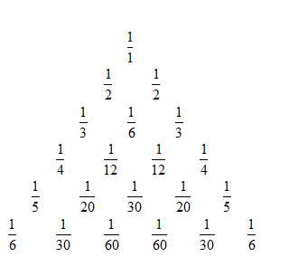

. The recurrence formula
. The recurrence formula  is verified by direct calculation.
is verified by direct calculation.

Here is a fragment of the table, which is called the Leibniz triangle. Its properties are "analogous in the sense of the opposite" to the properties of Pascal's triangle. The numbers on the boundary of the triangle are the inverses of consecutive natural numbers. Each number is equal to the sum of two numbers below it. Find the formula that connects the numbers from Pascal’s and Leibniz triangles.
The denominators of the numbers in the rows of the harmonic triangle are proportional to the elements of Pascal’s triangle, and the boundary terms serve as the proportionality coefficients. Where there is a number $C_n^k$ in the Pascal triangle, in the Leibniz triangle we find . The recurrence formula is verified by direct calculation.
See the solution above.